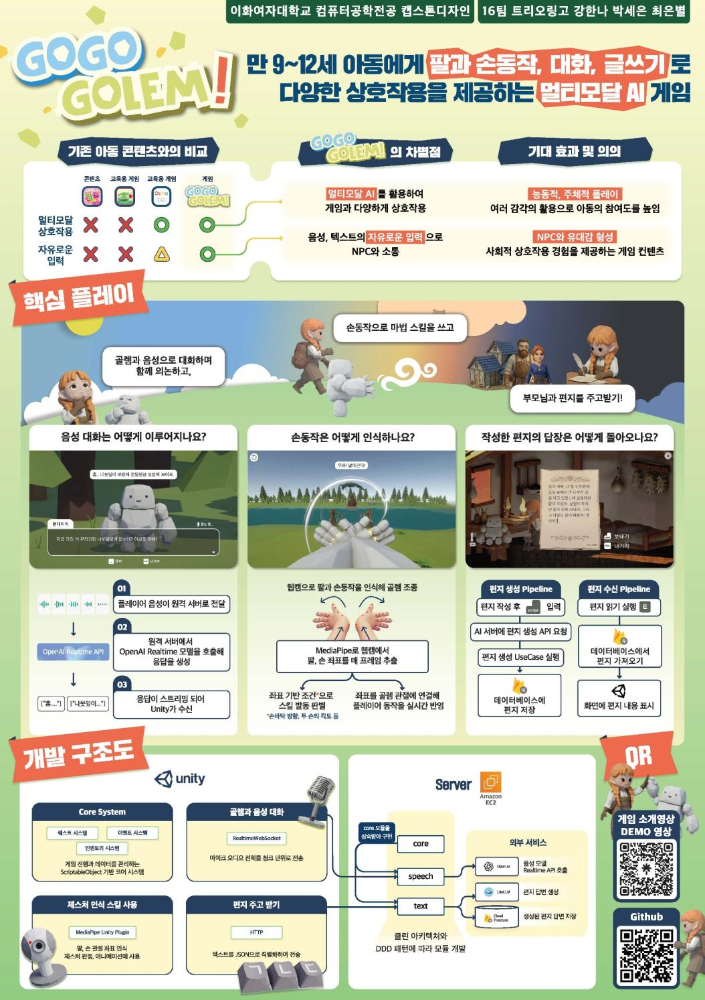
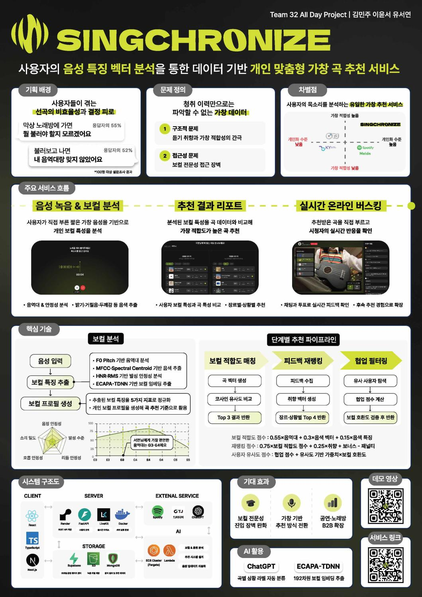
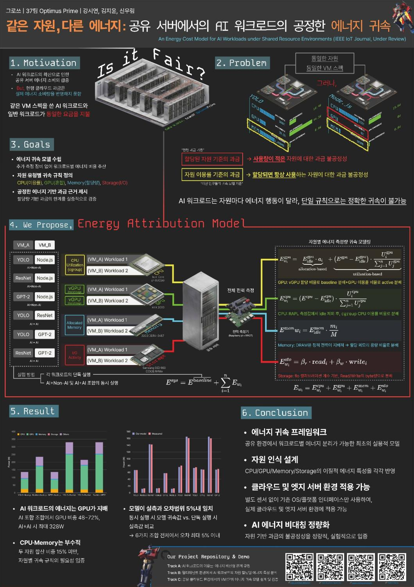

① 문제의 대상과 순간이 구체적이에요
회로 초보자의 측정 순서, 시청각 장애인의 정보 접근, 학내 의견 전달 통로처럼 사용 상황이 드러나요
[A01] [A06] [A09]PariView의 중심은 의학·감각 연구에서 출발해
사용자가 자기 시청 설정을 찾아가는 흐름이에요
이 한 행을 먼저 읽고, 바로 아래 큰 실제 화면에서 같은 내용을 확인하게 구성해요 포스터에는 심사에 필요한 핵심만 남기고 상세 연구·기술·검증은 기존 웹 링크에서 이어 읽도록 해요
대상 사례는 기관 공식 기록 8건, 참여자 직접 기록 1건, 제공 강의자료 1건이에요 추가 포스터 2점은 최우수·우수 사례로 따로 분석했어요 위 결론은 사례 관찰과 사용자 심사표를 함께 읽어 도출한 제안이에요 [G1] [G2]
| 대학·시점 | 팀·작품 | 행사·수상 범위 | 확인 출처 |
|---|---|---|---|
| 서울대 2026 등록 자료 | 찍어드림 LLM 기반 전자 회로 검사 시스템 | 서울대학교 공과대학 창의설계축전 창작활동부문 대상 | 기관 공식 [A01] |
| 서울대 2025 | 절대감자 솔라닌 기반 친환경 살충제 | 서울대와 함께하는 시흥시 딥테크 창업 아이디어 해커톤 대상 | 기관 공식 [A02] |
| KAIST 2025 | STAI-tuned 위성 분석·블록체인 기반 기후 재정 추적 솔루션 | STAI–AWS 2025 해커톤 대상 | 기관 공식 [A03] |
| KAIST 2015 시상 | Scamper 아이보호형 로보틱스 볼 | 2014 행복한 과학기술 공모전 일반부 대상 / 미래창조과학부 장관상 | 기관 공식 [A04] |
| 연세대 2024 | 연세드론 해당 작품명 미제공 | 현대모비스 모빌리티 SW 해커톤 1위 / 대상 | 기관 공식 [A05] |
| 연세대 2022 | 보이죠1호 인공지능 EMS 점자수트 | 제3회 보조기기 끝장 개발대회 대상 / 보건복지부 장관상 | 기관 공식 [A06] |
| 고려대 2025 | Ku쿠하세요 해당 작품명 미제공 | 2025 세종 DX 해커톤 주제3 대상 / 세종특별자치시장상 | 기관 공식 [A07] |
| 이화여대 2020 | 애플민트 명절 고속도로 휴게소 밀집도 예측 및 드라이브스루 휴게소 위치 제안 | 국토교통 빅데이터 온라인 해커톤 대상 / 국토교통부 장관상 | 기관 공식 [A08] |
| 이화여대 2024 | 멜팅팟 배울림꽃 / 학내 청원 플랫폼 | Ewha IT Hackathon 2024 대상 | 수상자 직접 기록 [A09] |
| 이화여대 연도 미표기 | 트리오링고 GOGO GOLEM! | 캡스톤 포스터 발표 / 산학 대상 | 제공 강의자료 [A10] |
대부분은 그 대학 학생·팀의 수상 사례예요 절대감자는 서울대 개최 행사 사례이며 팀의 대학 소속은 본문에 없어요
작품 설명과 심사 방식이 충분한 사례를 중심으로 해석했어요 연세드론·Ku쿠하세요는 공개 글만으로 작품의 상세 기술까지 평가하지 않았어요
조사 기간이나 대회 목록을 고정한 전수조사가 아니라 공개자료를 바탕으로 한 표적 사례 검토예요 수상작의 개별 심사 점수와 비수상작 대조 자료는 확보하지 않았어요
| 공식 자료에 공개된 평가 | PariView에 가져올 준비 |
|---|---|
| Scamper 수상 대회 창의성·사회기여·완성도·기술력·발표력 서면 → 면접 발표 → 종합 심사 [A04] | 기능 차별성과 사회적 사용 장면을 함께 설명하고, 작동하는 산출물로 뒷받침해요 |
| 2025 세종 DX 해커톤 완성도·사업화·기술성·독창성·적합성·전달력 부스 시연 → 상위 팀 발표 [A07] | 한 번에 이해되는 시연과 도입 제안을 동시에 준비해요 |
| 제3회 보조기기 끝장 개발대회 필요성·적합성·시작품·기대효과 등 대상 이해 교육·전문가 멘토링 포함 [A06] | 누구의 어느 불편을 해결하는지, 그 이해가 어떤 기능 선택으로 이어졌는지 보여줘요 |
회로 초보자의 측정 순서, 시청각 장애인의 정보 접근, 학내 의견 전달 통로처럼 사용 상황이 드러나요
[A01] [A06] [A09]측정 결과는 다음 측정 위치로, 교통 분석은 휴게소 위치 제안으로 이어져요
[A01] [A08]공 모양 장치의 알림·조종이나 GOGO GOLEM!의 세 가지 놀이처럼 사용자가 무엇을 하는지 보이게 해요
[A04] [A10]시흥 행사에서는 발표 7분 뒤 질문 8분을 배정했어요 구현과 도입 조건을 별도 자료로 준비할 이유예요
[A02]포스터·시연·답변 자료에서 같은 주장이 같은 근거로 연결되도록 만들어요 이 연결을 PariView의 심사 대응 전략으로 제안해요

기존 아동 콘텐츠와의 비교, 핵심 차별점, 이용자에게 기대하는 변화가 수평으로 이어져요 화살표의 출발과 끝이 명확해요
말하기·손동작·편지라는 세 행동을 큰 화면으로 보여줘요 사용자 행동을 먼저 보고 아래의 처리 흐름을 읽을 수 있어요
각 행동에 대응하는 구현 질문과 흐름이 가까이 있어요 여러 기술이 어느 체험을 만드는지 쉽게 연결돼요
같은 장면을 비교하는 화면, 고른 설정이 적용된 화면, 영상 아래에서 다시 조절하는 화면을 같은 크기로 배치해요
상단 장식 영상·캐릭터, 다섯 프로필 나열, GitHub QR 카드를 빼고 비교·적용·재조절 화면을 크게 배치해요 긴 설명은 웹으로 옮기고 각 화면에는 행동과 결과를 설명하는 한 문장만 남겨요
이 행은 PariView의 선택 과정을 선명하게 보여주기 위한 제안이에요 GOGO GOLEM!에 실린 기대효과는 그 팀의 주장과 해당 맥락으로 읽었어요

PariView는 상단을 GOGO GOLEM!의 한 행으로 바꾸고, 그 아래를 이 수직 흐름으로 연결하면 돼요

OptimusPrime은 측정 방법과 결과 그래프를 가까이 놓았어요 PariView 감각 지도에도 시간축·영상 구간·측정량·단위를 붙여 기술 근거로 읽히게 해요
두 사례의 상격은 각각 최우수·우수예요 사례에 실린 설문 수치·가중치·오차 수치는 PariView의 결과와 별개예요
| 항목·배점 | 심사 질문으로 읽기 | PariView의 답 | 보여줄 자료 |
|---|---|---|---|
| 창의·융합성 25점 | 기존 기능을 넘어 어떤 경험을 제안하나요 | 실제 기존 기능과 비교 → 같은 장면 비교·저장·재조절의 연결 | 상단 한 행 + 실제 A/B 화면 |
| 기획성 10점 | 처음 보는 사람이 순서대로 이해하나요 | 하나의 제목, 세 단계 체험, 읽을 근거와 체험 QR | 상단에서 15초 개요 / 시연 진입 |
| 기술성·완성도 15점 | 왜 그렇게 설계했고 실제로 어떻게 작동하나요 | 사용자 설정 → CSS·Web Audio → 출력 / 영상 측정 → 지도·예고 | 간단한 처리도·측정 단위·작동 기록 |
| 다학제적 접근성 20점 | 각 분야가 어느 설계 결정을 바꿨나요 | 감각 연구 → 조절 필요 / HCI → 비교·복귀 / 신호처리 → 변화 표시 | 연구 → 설계 → 기능의 연결 표 |
| 성실도·홍보효과 5점 | 어떤 과정과 역할로 완성했나요 | 문제 파악 → 문헌 검토 → 구현 → 당사자 의견·기능 점검 | 실제 구성원별 역할과 수정 이력 |
| 사회기여·사업화 20점 | 누가 도움을 받고 누가 도입·구매하나요 | 이용자–기관 운영자–플랫폼을 구분 / 제공 범위와 도입 단위 | 도입 모델·수익 구조 제안 |
| 미래 신산업 5점 | 행사 공고의 어느 분야와 연결되나요 | 디지털 미디어 접근성·개인화 SW의 실제 역할을 기술 | 공고의 5대 분야명 확인 후 정합성 표시 |
차별성 25점, 다학제 20점, 사회기여·사업화 20점에 집중해요 같은 기능을 세 번 반복하기보다, 각각 무엇이 다른지 / 왜 그렇게 설계했는지 / 누가 도입할지로 답을 나눠요
배점은 사용자 제공 심사표 그대로예요 점수 예측이나 임의의 합격선을 제시하지 않았어요 PDF p9의 수업용 40점 기준은 구성 점검에 참고하고 합산하지 않아요
| 확인한 예 | 실제 제공 기능 | PariView에서 강조할 접근 |
|---|---|---|
| Prime Video Dialogue Boost [C1] | 배경 음악·효과음 대비 대사를 강조해요 이용자가 제공된 단계를 선택해요 | 같은 장면을 비교하며 소리와 화면의 시작 설정을 함께 찾아요 |
| Apple Dim Flashing Lights [C2] | 섬광 감지 시 영상을 어둡게 해요 지원 미디어의 재생 타임라인에 섬광 구간도 표시해요 | 소리·빛 변화 정보를 조절 화면과 연결하고, 사용자가 예고와 설정을 선택해요 |
| PariView 현재 구현 | 5단계 비교·직접 조절·저장·원본 비교·재피팅과 지원 영상용 확장 기능을 연결해요 | 핵심 차별점은 지금의 선호를 찾고 유지·수정하는 사용 과정이에요 |
앞의 두 행은 공식 문서에 나온 기능 예시예요 해당 브랜드의 전체 접근성 기능을 평가한 표는 아니에요 기능 부재를 단정하는 ○·× 대신 실제 확인한 동작을 적어요
대사를 강조하고
섬광을 완화하는 기능이 있어요
같은 장면을 비교하며
빛·소리·자막 설정을 골라요
내가 고른 설정으로 보고
필요할 때 바로 바꿔요
의학·감각 연구를 바탕으로 같은 장면을 비교하고, 빛·소리·자막을 직접 조절하는 시청 선호 피팅 서비스
‘최초’나 ‘모든 서비스보다 우수’ 같은 범위 큰 표현 대신, 실제 시연으로 확인할 수 있는 차별점을 제목 가까이에 두는 제안이에요
| 연구·평가 관점 | 설계 해석 | 현재 기능과 확인할 것 |
|---|---|---|
| 개인·상황별 감각 경험 MacLennan 등, 2022 자폐 성인 49명 자기보고 [R1] | 한 번 고른 값을 고정하기보다 지금의 선호를 다시 고를 수 있게 해요 | A/B 비교·재피팅 다시 비교하려는 이유와 장면별 차이 |
| 개인별 환경 조정 NICE CG142 성인 자폐 지원 지침 [M5] | 빛·소리·휴식 조건을 개인의 필요에 맞춰 선택하게 해요 | 화면·소리 항목별 조절 어떤 항목을 바꾸고 유지하는지 |
| 감각 변화의 직접 통제 Unwin 등, 2022 자폐 아동 41명 감각실 비교 [R2] | 사용자에게 선택·건너뛰기·되돌리기 권한을 줘요 | 수정·원본 비교·복귀 원하는 상태로 스스로 돌아갈 수 있는지 |
| 시각 비교·소리 내성 구분 AAO·ASHA 자료 [M1] [M3] | 가독성과 편안함, 전체 음량과 특정 소리의 반응을 나눠 살펴봐요 | 같은 장면 비교·항목별 질문 선호 응답을 통한 설정 탐색 |
| 시청각 반응의 차이 Matsuzaki 등, 2022 7–14세 남아 46명 뇌자도 [R3] | 시청각 경험을 단일 평균값으로 다루지 않는 관점에 참고해요 | 소리·빛을 구분한 정보 제공 측정 신호와 사용자 판단을 함께 살펴보기 |
개인차 감각 경험은 개인과 상황에 따라 달라요
환경 조절 빛과 소리를 개인의 필요에 맞춰 조절해요
사용자 선택 설정의 선택과 변경은 사용자가 결정해요
관찰·지침에서 설계 원칙으로 이어지는 해석이에요 구체적인 5단계·프로필 숫자는 팀의 제품 설계예요 ‘학술논문 17편’ 대신 ‘논문 11편·전문자료 6건을 검토한 설계’로 표기해요
| 기술 경로 | 포스터에 남길 설명 | 상세 자료에서 확인할 것 |
|---|---|---|
| 화면 | 밝기·대비·채도 등 선택 값을 화면 필터로 적용해요 | CSS filter 적용값·원본 비교와 기본값 초기화의 차이 |
| 소리 | 고음 완화·말소리 EQ·음량 압축·출력을 조절해요 | Web Audio 처리 순서·수치 범위·지원 영상 조건 |
| 영상 신호 | 소리 크기와 프레임 밝기 변화로 지도와 예고 구간을 만들어요 | EBU R128 라우드니스·평균 Y값·시간축·구간 규칙 |
| 확장 연결 | 저장한 설정을 PC Chrome의 지원 영상에 적용해요 | 상태 저장·적용·끄기·원상복귀·페이지 이동 기록 |
| 추천 경로 | 연구 카탈로그의 시작 후보와 이유를 제안하고 사용자가 확정해요 | AI 응답 검증·기본 제안 전환·출처 표시 / 선택권 유지 |
현재 README와 확장 검증 기록에는 32개 항목 통과가 정리돼 있어요 영상 적용·상태·원상복귀 같은 실제 동작을 보여줘요
이 보고서에서는 해당 검사를 재실행하지 않고 기록과 구현을 확인했어요사용자가 확인한 ‘신경다양성 당사자 참여 검증 완료’를 유지해요 인원·항목·점수는 원장에 제공된 정보 범위에 맞춰 관리해요
새 10명 field-kit은 별도 제공용 설문·실험 서식이에요10초 같은 장면 두 설정 보기 → 20초 편한 쪽 선택·적용 → 20초 보면서 한 항목 수정·원본 비교 → 10초 저장·지원 영상 적용 확인
지원 조건은 짧은 각주로, 긴 구현 설명과 검증 항목은 QR로 연결해요 지도·예고의 기준은 영상 신호 변화 규칙으로 이름 붙이고 개인의 의학적 역치처럼 표시하지 않아요
사용자는 자기 시청 설정을 고르고,
기관은 그 선택 환경을 제공하는 모델을 제안해요
| 역할 | 1차 도입 가설 | 제공 가치 |
|---|---|---|
| 이용자 | 영상 학습·교육을 이용하는 감각 민감 성인, 신경다양성 당사자 | 같은 콘텐츠를 보며 자신의 화면·소리·자막 설정을 선택해요 |
| 도입 담당자 | 대학 학습지원·장애학생지원 담당자, 교육 영상 운영자, 성인 복지·평생교육 기관 | 지원 가능한 영상과 설치 환경을 정하고 이용 안내·설정 사용을 지원해요 |
| 구매·계약 주체 | 교육기관 또는 영상 플랫폼 운영사 | 기관 이용권, 플레이어 연동, 호환성 유지·지원 범위에 비용을 지급하는 구조를 검토해요 |
현재의 웹 플레이어와 지원 영상용 확장 기능에서 시작할 수 있고, 도입 기관이 관리하는 영상 환경에서 지원 범위를 구체화할 수 있어요 DRM을 포함한 대형 OTT 연동은 후속 파트너 협의·기술 검증 단계로 두는 제안이에요
기관·운영 규모별 연간 계약과 업데이트 지원
플레이어 연결·환경 설정·설치 안내 비용
브라우저·플레이어 변경 대응과 호환성 점검
위 항목은 수익 구조 제안이에요 현재 계약·판매·연동 SDK 보유를 뜻하지 않아요 구체 가격은 설치·지원 시간과 구매 담당자의 도입 조건을 확인한 뒤 정해요
이용 의향 83%는 관심을 보여주는 팀 설문 결과로 사용해요 유료 구매 의향·실제 계약 전환율은 구매 담당자 인터뷰에서 별도로 확인할 항목이에요
| 단계 | 준비할 산출물 | 다음 단계로 넘어갈 근거 |
|---|---|---|
| 1 · 설치·시연 | 지원 브라우저·영상 범위, 기관용 안내, 원상복귀 시연 | 담당자가 환경을 설치하고 이용자에게 설명할 수 있는지 |
| 2 · 기관 파일럿 | 동의·평가 절차, 개인 설정 과제, 담당자 지원 기록 | 이용자의 실제 사용 의견·반복 사용·운영 부담과 수정 사항 |
| 3 · 플랫폼 연동 | 플레이어 모듈 규격, 동기화·접근성·지원 조건, 운영 계약 | 플랫폼별 재생·DRM·성능·복원 검증과 구매 조건 |
세 단계는 제안한 사업 경로예요 현재 완료된 설치나 계약 건수로 표현하지 않아요
같은 장면의 선호 비교, 설정 저장·이식, 영상 신호와 사용자 조절의 연결 중 무엇이 구체적인 독자 구성인지 정리해요 그다음 선행기술·공개 이력을 조사해 권리화 검토 항목을 좁혀요 현재 출원이나 독점 기술로 표기할 단계는 아니에요
실제 팀원의 연구·UI·신호처리·확장·배포·검증 기여를 산출물 옆에 짧게 적어요 미래 분야는 우선 디지털 미디어 접근성·개인화 소프트웨어로 설명하고, 행사 공고에 정해진 5대 신산업의 명칭을 확인해 정확히 대응시켜요
제공된 심사표에는 5대 분야의 구체 목록이 없어요 의료 효과나 미래 기능을 더해 분야를 맞추기보다, 현재 동작하는 제품의 연결 지점을 설명하는 제안이에요
| 시간 | 보여줄 곳 | 전할 내용 |
|---|---|---|
| 0:00–1:10 | 문제·설문 | 같은 영상에서도 빛·소리에 대한 필요가 다름 → 팀 설문에서 나타난 관련 기능 수요 |
| 1:10–2:10 | 상단 한 행 | 기존 대사·섬광 기능을 인정하고, 선호를 찾는 비교·저장·재조절 과정을 설명 |
| 2:10–3:10 | 연구 원칙·도입 모델 | 개인차·환경 조절·선택권이 기능과 도입 환경으로 이어지는 이유 |
| 3:10–4:40 | 큰 화면·시연 | 선호 비교 → 적용 → 시청 중 수정·원본 비교·저장 |
| 4:40–5:30 | 처리도·확인 기록 | 출력 처리와 영상 신호 분석, 실제 기능 확인과 당사자 참여 |
| 5:30–6:00 | 핵심 문장·QR | 나에게 맞는 설정을 스스로 찾고 이어 쓰는 접근성 경험 |
사용자 PDF의 권장 구성인 배경 3–4분, 시나리오 1–2분, 구조·결과 약 1분을 6분으로 배치한 안이에요 실제 행사 발표 제한 시간이 있으면 그 시간을 우선해요
| 예상 질문 | 답의 중심 |
|---|---|
| 기존 밝기 조절과 무엇이 달라요 | 같은 장면 비교로 선택을 돕고, 여러 항목을 저장·재조절·지원 영상 적용으로 연결해요 |
| 연구 17건이 무엇을 뒷받침하나요 | 개인차·환경 조절·사용자 통제의 설계 원칙이에요 연구 대상·방법과 화면에 연결한 해석을 보여줘요 |
| 어떻게 작동하나요 | 설정값이 화면 필터·소리 처리에 반영되는 경로와 원본 복귀를 바로 시연해요 |
| 누가 구매하나요 | 교육기관·영상 플랫폼을 구매 주체로 제안해요 운영자 인터뷰와 파일럿으로 연동·지원 조건을 확인할 계획이에요 |
| 참여자 평가 결과는요 | 완료 확인과 실제 제공된 기록 범위로 답해요 세부 인원·항목·점수는 원자료 확인 뒤 자료에 추가해요 |
비교 한 행 → 큰 솔루션 화면 → 연구 원칙 → 검증·도입 모델 순서예요 상단 장식·프로필 나열·GitHub QR은 덜어내요 자세한 구조와 근거는 웹으로 연결하고, 포스터의 작은 설명은 줄여요
서울대학교 공과대학 창의설계축전 · 창작활동부문 대상
서울대학교 공과대학 원문 ↗서울대와 함께하는 시흥시 딥테크 창업 아이디어 해커톤 · 대상
서울대학교 원문 ↗STAI–AWS 2025 해커톤 · 대상
KAIST 건설및환경공학과 원문 ↗2014 행복한 과학기술 공모전 · 일반부 대상 / 미래창조과학부 장관상
KAIST 전산학부 원문 ↗현대모비스 모빌리티 SW 해커톤 · 1위 / 대상
연세대학교 기계공학부 원문 ↗제3회 보조기기 끝장 개발대회 · 대상 / 보건복지부 장관상
국립재활원 보도자료 / 국립특수교육원 온맘 재게시 원문 ↗2025 세종 DX 해커톤 · 주제3 대상 / 세종특별자치시장상
고려대학교 세종SW중심대학사업단 원문 ↗국토교통 빅데이터 온라인 해커톤 · 대상 / 국토교통부 장관상
이화여자대학교 통계학과 / 대회 운영 측 기록 보완 원문 ↗Ewha IT Hackathon 2024 · 대상
수상 팀 프론트엔드 참여자 정은채의 직접 기록 원문 ↗캡스톤 포스터 발표 / 산학 · 대상
사용자 제공 강의 PDF p11 · 포스터 시각 확인In Our Own Words: The Complex Sensory Experiences of Autistic Adults
Autism spectrum disorder in adults: diagnosis and management (CG142)
G1 · 사용자 제공 강의 PDF CapstoneDesign-Poster preparation (1).pdf, 13쪽
p5–8 구성·시연·발표 / p9 수업 평가 / p11–13 수상 포스터
G2 · 사용자 제공 심사표 이미지 25·10·15·20·5·20·5점, 총 100점
P12 All Day Project / SINGCHRONIZE, 최우수·산학, G1 p12
P13 OptimusPrime, 우수·연구, G1 p13
A08의 2020년 표기는 대회 자료 목록 및 DACON 운영자 인터뷰로 교차 확인했어요 A09는 수상자 직접 기록이며 기관 공식 심사평으로 분류하지 않았어요
원장: sources.json · 기존 감각 자료: ../sources.json, ../medical-sensory-sources.json
실험·설문 제공용 빈 서식: ../../analysis/user-study/field-kit/ · 편집 전달문: ../../handoff/POSTER_STRATEGY_100.txt